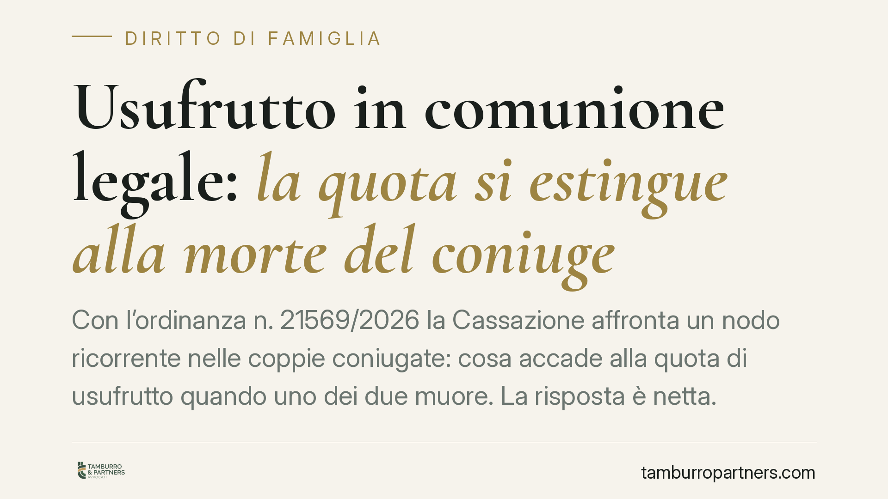

Usufrutto in comunione legale: la quota si estingue alla morte del coniuge
Con l'ordinanza n. 21569/2026 la Cassazione affronta un nodo ricorrente nelle coppie coniugate: cosa accade alla quota di usufrutto quando uno dei due muore. La risposta è netta. Quella quota non passa al coniuge superstite né agli eredi, ma si estingue e torna al nudo proprietario. Una regola che incide su pianificazione patrimoniale, acquisti immobiliari e aspettative successorie.

Il caso deciso dalla Cassazione
Due coniugi in comunione legale acquistano insieme l'usufrutto di un immobile, ciascuno per il 50%. La nuda proprietà resta a un terzo. Alla morte di uno dei due, il coniuge superstite rivendica l'intero usufrutto, ritenendo che la quota del defunto si sia consolidata in suo favore.
La Seconda Sezione civile (ord. n. 21569/2026) respinge questa lettura. La quota del coniuge defunto non si trasferisce al superstite e non entra nell'asse ereditario: si estingue. Di conseguenza, quella porzione di diritto si riespande automaticamente a vantaggio del nudo proprietario.
Inquadramento normativo
Il punto di partenza è l'art. 979 c.c., che fissa la durata dell'usufrutto: non può eccedere la vita dell'usufruttuario. L'usufrutto è un diritto reale strettamente personale. Quando l'usufruttuario muore, il diritto cessa e il nudo proprietario riacquista la piena proprietà del bene, senza bisogno di alcun atto.
L'art. 981 c.c. conferma che l'usufruttuario ha il godimento del bene finché è in vita, nei limiti stabiliti. Nessuna di queste norme prevede che, in caso di contitolarità, la morte di un usufruttuario faccia crescere la quota in capo all'altro.
Ma il coniuge superstite non può invocare neppure la disciplina della comunione legale. Gli artt. 177 e 191 c.c. regolano l'acquisto dei beni in costanza di matrimonio e lo scioglimento della comunione. La Corte precisa che l'usufrutto resta un diritto a termine (la vita di ciascun titolare): la comunione legale incide sulla titolarità dell'acquisto, non trasforma la natura personale e temporanea dell'usufrutto. Alla morte di un coniuge, la sua quota si estingue secondo l'art. 979 c.c., prima e indipendentemente da ogni logica successoria.
L'eccezione: il patto di accrescimento
Esiste una strada per ottenere il risultato opposto: il cosiddetto patto di accrescimento. Si tratta di una clausola, da inserire nell'atto di acquisto dell'usufrutto, con cui le parti stabiliscono che alla morte di un usufruttuario la sua quota si accresca a favore dell'altro, anziché estinguersi.
La clausola non è implicita né presunta. Deve essere espressa e, dato il contesto, va formalizzata davanti al notaio nell'atto costitutivo. In assenza di questa pattuizione, opera la regola ordinaria: la quota si estingue.
Cosa cambia per chi acquista o possiede un usufrutto
Le implicazioni sono concrete, soprattutto per le coppie che pianificano l'acquisto della casa familiare o che hanno già strutturato il patrimonio in questo modo.
Primo profilo: il coniuge superstite potrebbe ritrovarsi a godere solo della metà dell'usufrutto, condividendo il bene con il nudo proprietario (spesso un figlio o un parente), senza averlo messo in conto.
Secondo profilo: gli eredi del coniuge defunto non possono vantare pretese sulla quota estinta. Quella porzione non è caduta in successione e non concorre alla formazione dell'asse.
Terzo profilo: chi ha venduto la nuda proprietà, o chi l'ha ricevuta, vede consolidarsi anticipatamente parte dei propri diritti. È un elemento che va valutato quando si strutturano operazioni di cessione della nuda proprietà a scopo previdenziale.
L'equivoco nasce spesso dalla confusione tra comproprietà in piena proprietà e contitolarità di usufrutto. Nel primo caso la quota del defunto va agli eredi; nel secondo, trattandosi di diritto a termine, si estingue.
Cosa fare in concreto
- Verificate il titolo di acquisto dell'usufrutto: controllate se è presente un patto di accrescimento e con quale formulazione.
- Inserite la clausola di accrescimento in sede di nuovo acquisto, se l'obiettivo è garantire al coniuge superstite l'intero usufrutto.
- Distinguete piena proprietà e usufrutto nelle operazioni immobiliari: le regole successorie sono diverse e incidono sul risultato.
- Valutate le alternative (ad esempio usufrutto successivo o diritto di abitazione ex art. 540 c.c.) prima di definire la struttura dell'acquisto.
- Pianificate con un professionista l'assetto patrimoniale della coppia, coordinando atto di acquisto, regime matrimoniale e disposizioni testamentarie.
Consigliamo di affrontare queste scelte prima della firma dell'atto: dopo, correggere la struttura è molto più oneroso e non sempre possibile.
---
*Contributo informativo a cura di Tamburro & Partners - Avv. Giuseppe Tamburro. Non costituisce parere legale.*
Ogni famiglia ha il suo equilibrio.
Separazione, divorzio, affidamento, assegno: se vuoi un confronto riservato su una specifica situazione, scrivi allo studio. Ti rispondiamo entro un giorno lavorativo.